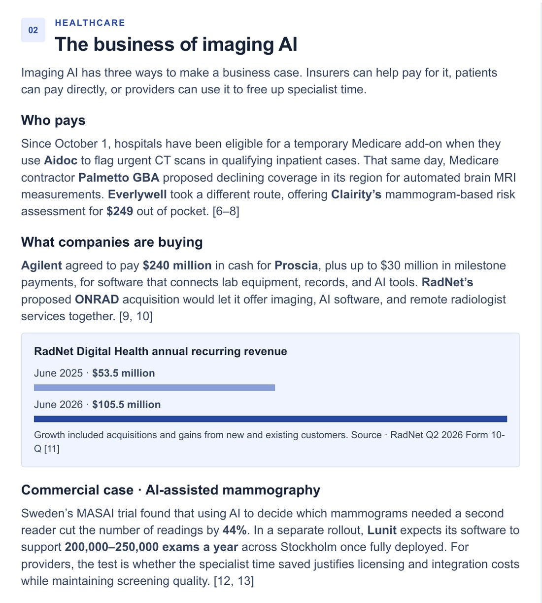

Introduction
An imaging AI tool can be accurate and still fail as a product if no one pays for it. Hospitals and imaging centers want to know whether insurers will reimburse it, whether patients will pay for it directly, or whether it saves enough radiologist time to cover its license and integration costs.
Our team produced Fieldnotes, a six-page newsletter that looks at four decisions AI can help people make across retail, healthcare, fintech and infrastructure. I wrote the healthcare section, which follows the money behind medical imaging AI.
Description
The full November 2026 edition is available as a PDF. This page covers only my section, "The business of imaging AI", on page 3. It organizes recent developments around three ways imaging AI can make a business case: insurers help pay for it, patients pay directly or providers use it to free up specialist time.

What the section covers
| Business case | Development | Key figure |
|---|---|---|
| Insurers pay | Hospitals became eligible for a temporary Medicare add-on payment when they use Aidoc to flag urgent CT scans in qualifying inpatient cases | Effective October 1, 2026 |
| Insurers decline | Medicare contractor Palmetto GBA proposed declining coverage in its region for automated brain MRI measurements | Proposed the same day |
| Patients pay | Everlywell began offering Clairity's mammogram-based breast cancer risk assessment directly to consumers | $249 out of pocket |
| Companies buy platforms | Agilent agreed to acquire Proscia, whose software connects lab equipment, records and AI tools | $240 million in cash, plus up to $30 million in milestones |
| Companies bundle services | RadNet's proposed ONRAD acquisition would combine imaging, AI software and remote radiologist services | Digital Health recurring revenue rose from $53.5M to $105.5M in a year, including acquisitions |
| Providers save time | In Sweden's MASAI trial, AI decided which mammograms needed a second reader; Lunit is rolling out across Stockholm | 44% fewer readings; 200,000–250,000 exams a year expected |
Objective
The team's goal was to show readers where AI creates measurable value in real industries, using current, sourced developments rather than general claims. For my section, I set out to:
- Explain how imaging AI makes money, not just what it can detect.
- Show the full range of payer decisions, including a coverage rejection, so readers see the real landscape.
- Give healthcare providers a clear test for judging an imaging AI investment.
Process
- Frame the questionI chose to organize the section around a single business question, "who pays?", instead of a list of product announcements.
- Research within a fixed windowI gathered developments from the issue's research window (October 8 to November 7, 2026), using primary sources: company announcements, a Medicare contractor's proposed coverage decision, an SEC filing and a peer-reviewed trial in The Lancet Oncology.
- Sort the evidenceI grouped each development under one of three business models: insurer payment, direct patient payment or provider time savings. I added a fourth thread on acquisitions to show where companies are placing their bets.
- Visualize the numbersI turned RadNet's Form 10-Q figures into a simple bar chart of Digital Health recurring revenue, with a note that growth included acquisitions.
- Write for non-specialistsI explained reimbursement terms in plain language, numbered every source and ended with the cost-versus-time-saved test providers can apply.
- Edit as a teamThe four of us aligned our sections on one voice, format and citation style so the newsletter reads as a single publication.
Challenges and solutions
| Challenge | How I solved it |
|---|---|
| Payer signals pointed in opposite directions: one Medicare add-on, one proposed coverage denial | I presented both side by side as the current payer landscape instead of claiming a single trend. |
| Headline growth figures can hide acquisitions | I stated that RadNet's revenue growth included acquisitions as well as gains from new and existing customers. |
| Trial results are not the same as real-world deployment | I kept the MASAI trial evidence separate from Lunit's expected rollout volume and framed the open question as a cost test. |
| Fitting a complex market into one page | I limited the section to three business models plus one chart, and moved all detail into numbered sources. |
Tools and technologies used
- Primary-source research
- Company announcements, a Medicare proposed local coverage decision, an SEC Form 10-Q and peer-reviewed research.
- Healthcare reimbursement analysis
- Medicare add-on payments, local coverage decisions and direct-to-consumer pricing.
- Financial analysis
- Acquisition terms and annual recurring revenue from public filings.
- Data visualization
- A bar chart of recurring revenue growth.
- Collaborative writing
- A shared newsletter template, consistent citation style and team editing.
Value proposition
This project shows that I can evaluate the business case for AI in healthcare by following who pays, who buys and what it saves, and explain it clearly to decision makers.
Organizations rarely fail to adopt AI because the model does not work. They fail because the economics do not. This section gives providers a practical way to judge whether imaging AI will pay for itself.
Unique value
- A pricing analyst's view of healthcare AI. I work in pharmacy benefits pricing at CVS Health, where reimbursement and coverage shape every decision. I read payer moves as business signals, not just news.
- A different skill from my other projects. Project 1 shows building an AI tool, Project 2 research and storytelling and Project 3 technical judgment. This project shows business-case analysis of AI in a real market.
- Balanced evidence. The section includes a coverage denial alongside a payment win, and flags acquisition-driven growth, so readers get the real picture rather than hype.
- Teamwork. I delivered my section within a shared format so four authors could publish one consistent newsletter.
Relevance
For healthcare leaders deciding whether to buy imaging AI, the section turns a crowded market into one decision: does the specialist time saved, or the reimbursement available, outweigh licensing and integration costs while keeping quality high?
For analysts and investors, it shows how coverage decisions, consumer pricing and platform acquisitions together reveal where value in imaging AI is moving.
For my work in healthcare analytics, it reflects the same questions I ask about any pricing or AI initiative: who pays, what changes in daily work and how we will measure it.
Use it before buying imaging AI. Ask three questions drawn from the section:
- Is there a payer, such as a Medicare add-on, that will help cover the cost?
- Would patients pay for it directly, as with consumer risk assessments?
- If neither, does the specialist time saved justify the license and integration costs without lowering quality?
References
- Siddharth, Mohammed, Akash, & Estanislao. (2026, November). Fieldnotes: AI at work [Newsletter]. Healthcare section by Akash Singh.
- Agilent Technologies. (2026, October 13). Proposed Proscia acquisition [Press release].
- Aidoc. (2026, August 13). Medicare add-on payment eligibility for CARE Body CT Multi-Triage [Press release].
- Everlywell. (2026, October 1). Nationwide launch of Clairity Breast through Everlywell [Press release].
- Lång, K., et al. (2023). Artificial intelligence-supported screen reading versus standard double reading in the Mammography Screening with Artificial Intelligence trial (MASAI). The Lancet Oncology, 24(8), 936–944. https://doi.org/10.1016/S1470-2045(23)00298-X
- Lunit. (2026, September 28). Planned rollout of a second reader across Stockholm [Press release].
- Palmetto GBA & Centers for Medicare & Medicaid Services. (2026, October 1). Proposed local coverage determination: Automated brain MRI analysis.
- RadNet. (2026). Quarterly report (Form 10-Q) for the second quarter of 2026. U.S. Securities and Exchange Commission.
- RadNet. (2026, October 26). ONRAD acquisition agreement [Press release].